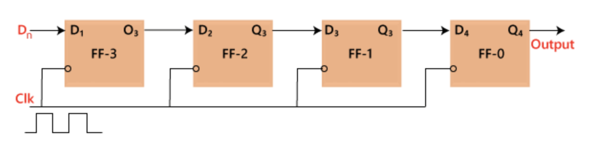
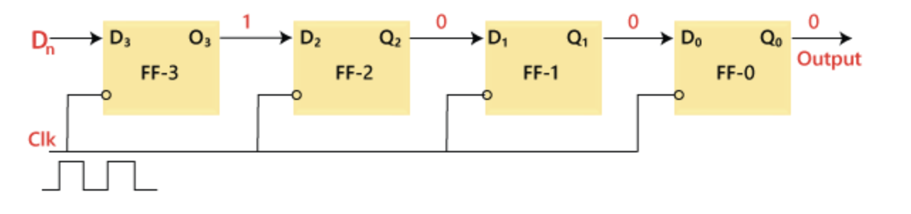
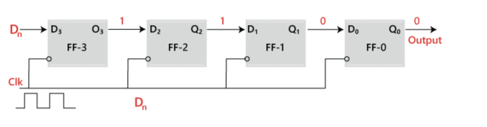
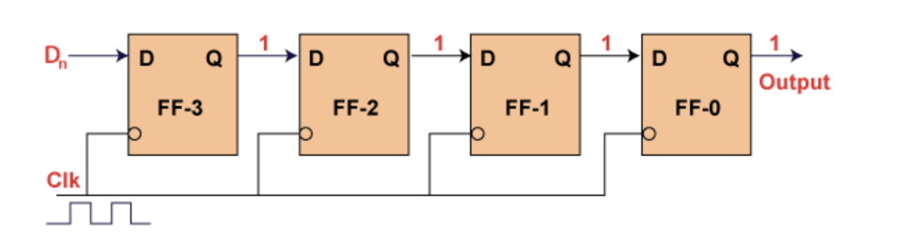
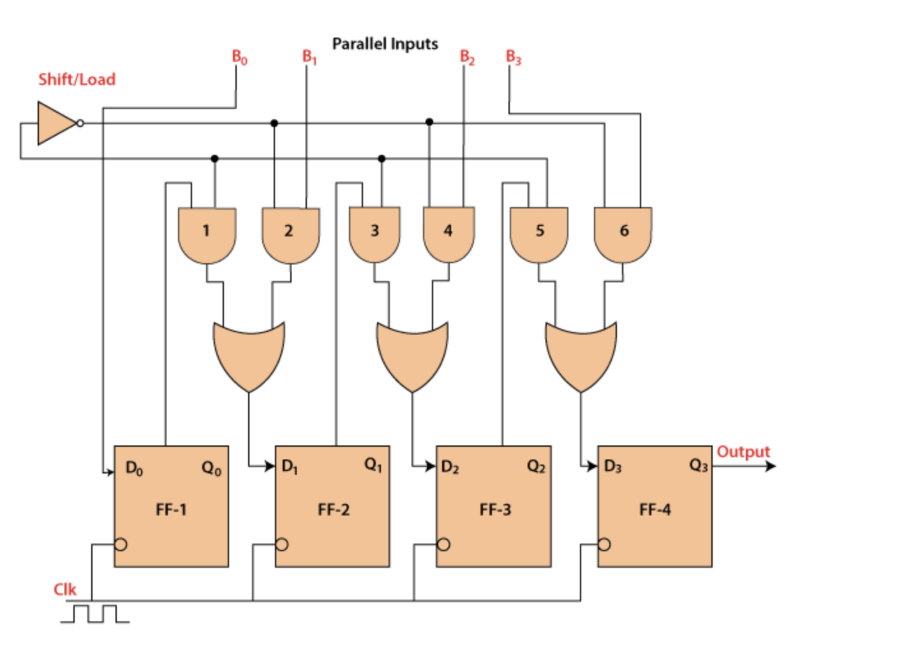

Department of Computer Engineering
TITLE :SHIFT REGISTERS
Modes of operation of a shift register :
- Serial Input Serial Output. (SISO).
- Serial Input Parallel Output. (SIPO).
- Parallel In Serial Out. (PISO).
- Parallel In Parallel Out. (PIPO).
- Bidirectional shift registor
- Universal shift register
1. SERIAL INPUT SERIAL OUTPUT(SISO)
In "Serial Input Serial Output", the data is shifted "IN" or "OUT" serially. In SISO, a single bit is shifted
at a time in either right or left direction under clock control.
Initially, all the flip-flops are set in
"reset" condition i.e. Y3 = Y2 = Y1 = Y0 = 0. If we pass the binary number 1111, the LSB bit of the number is
applied first to the Din bit. The D3 input of the third flip flop, i.e., FF-3, is directly connected to the
serial data input D3. The output Y3 is passed to the data input d2 of the next flip flop. This process remains
the same for the remaining flip flops. The block diagram of the "Serial IN Serial OUT" is given below.
Block diagram:
Operation:
When the clock signal application is disabled, the outputs Y3 Y2 Y1 Y0 = 0000. The LSB bit of the number is passed to the data input Din, i.e., D3. We will apply the clock, and this time the value of D3 is 1. The first flip flop, i.e., FF-3, is set, and the word is stored in the register at the first falling edge of the clock. Now, the stored word is 1000.
The next bit of the binary number, i.e., 1, is passed to the data input D2. The second flip flop, i.e., FF-2, is set, and the word is stored when the next negative edge of the clock hits. The stored word is changed to 1100
The next bit of the binary number, i.e., 1, is passed to the data input D1, and the clock is applied. The third flip flop, i.e., FF-1, is set, and the word is stored when the negative edge of the clock hits again. The stored word is changed to 1110.

Similarly, the last bit of the binary number, i.e., 1, is passed to the data input D0, and the clock is applied. The last flip flop, i.e., FF-0, is set, and the word is stored when the clock's negative edge arrives. The stored word is changed to 1111.
Truth table:

Waveform:

2. SERIAL INPUT PARALLEL OUTPUT(SISO)
In the "Serial IN Parallel OUT" shift register, the data is passed serially to the flip flop, and outputs are
fetched in a parallel way. The data is passed bit by bit in the register, and the output remains disabled until
the data is not passed to the data input. When the data is passed to the register, the outputs are enabled, and
the flip flops contain their return value
Below is the block diagram of the 4-bit serial in the parallel-out
shift register. The circuit having four D flip-flops contains a clear and clock signal to reset these four flip
flops. In SIPO, the input of the second flip flop is the output of the first flip flop, and so on. The same
clock signal is applied to each flip flop since the flip flops synchronize each other. The parallel outputs are
used for communication.
block diagram:

3. PARALLEL INPUT SERIAL OUTPUT(SISO)
In the "Parallel IN Serial OUT" register, the data is entered in a parallel way, and the outcome comes serially. A four-bit "Parallel IN Serial OUT" register is designed below. The input of the flip flop is the output of the previous Flip Flop. The input and outputs are connected through the combinational circuit. Through this combinational circuit, the binary input B0, B1, B2, B3 are passed. The shift mode and the load mode are the two modes in which the "PISO" circuit works.
Load mode
The bits B0, B1, B2, and B3 are passed to the corresponding flip flops when the second, fourth, and sixth "AND" gates are active. These gates are active when the shift or load bar line set to 0. The binary inputs B0, B1, B2, and B3 will be loaded into the respective flip-flops when the edge of the clock is low. Thus, parallel loading occurs.
Shift mode
The second, fourth, and sixth gates are inactive when the load and shift line set to 0. So, we are not able to load data in a parallel way. At this time, the first, third, and fifth gates will be activated, and the shifting of the data will be left to the right bit. In this way, the "Parallel IN Serial OUT" operation occurs.
Block diagram:
4. PARALLEL IN PARALLEL OUT
In "Parallel IN Parallel OUT", the inputs and the outputs come in a parallel way in the register. The inputs A0, A1, A2, and A3, are directly passed to the data inputs D0, D1, D2, and D3 of the respective flip flop. The bits of the binary input is loaded to the flip flops when the negative clock edge is applied. The clock pulse is required for loading all the bits. At the output side, the loaded bits appear.
Block diagram:

5. BIDIRECTIONAL SHIFT REGISTER.
The binary number after shifting each bit of the number to the left by one position will be equivalent to the number produced by multiplying the original number by 2. In the same way, the binary number after shifting each bit of the number to the right by one position will be equivalent to the number produced by dividing the original number by 2. For performing the multiplication and division operation using the shift register, it is required that the data should be moved in both the direction, i.e., left or right in the register. Such registers are called the "Bidirectional" shift register.Below is the diagram of 4-bit "bidirectional" shift register where DR is the "serial right shift data input", DL is the "left shift data input", and M is the "mode select input".

Operations:
1. Shift right operation(M=1) The first, third, fifth, and seventh AND gates will be enabled, but the second, fourth, sixth, and eighth AND gates will be disabled. The data present on the data input DR is shifted bit by bit from the fourth flip flop to the first flip flop when the clock pulse is applied. In this way, the shift right operation occurs.
2. Shift left operation(M=0) The second, fourth, sixth and eighth AND gates will be enabled, but the AND gates first, third, fifth, and seventh will be disabled. The data present on the data input DR is shifted bit by bit from the first flip flop to the fourth flip flop when the clock pulse is applied. In this way, the shift right operation occurs.
6. UNIVERSAL SHIFT REGISTER.
A register where the data is shifted in one direction is known as the "uni-directional" shift register. A register in which the data is shifted in both the direction is known as "bi-directional" shift register. A "Universal" shift register is a special type of register that can load the data in a parallel way and shift that data in both directions, i.e., right and left. The input M, i.e., the mode control input, is set to 1 to perform the parallel loading operation. If this input set to 0, then the serial shifting operation is performed. If we connect the mode control input with the ground, then the circuit will work as a "bi-directional" register. The diagram of the universal shift register is given below. When the input is passed to the serial input, the register performs the "serial left" operation. When the input is passed to the input D, the register performs the serial right operation.